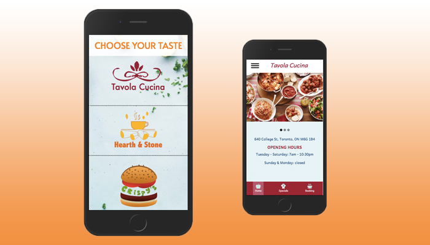
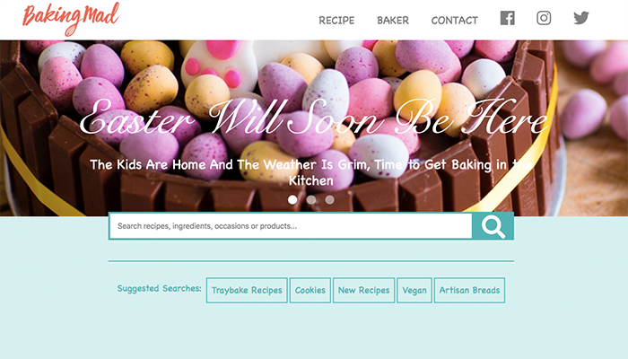

The app is developed using React, it displays the current week of record. Once the intiator registers an appointment, the recipient can confirm, reschedule or cancle the appoointment.

Family Eatery App
The app is built using HTML, CSS, jQuery and GSAP, it displays three restaurant options for users to choose, and every restaurant consists of a homepage, a menu page and a reservation page.

Baking Site
The site is built using CSS grid and jQuery, it is fully responsive across all viewport, including desktop, tablet and mobile. The animation utilises the feature of CSS animation and jQuery.